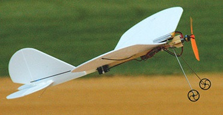
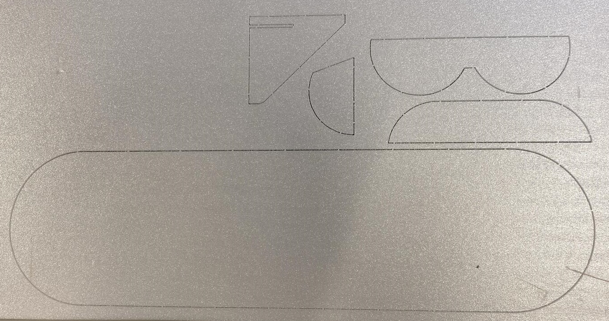

Het idee is dat we indoor kunnen vliegen met een eenvoudig te bouwen vliegtuig. Hier is veel lol aan te beleven en wat vliegvaardigheden op te doen voor diegene waar de vliegkunst nog voor verbetering vatbaar is.
Het oog is gevallen op de ‘Split Stik’ naar ontwerp van Paul Martin. Het bouwplan is gratis te downloaden van theparkpilot.org
Spanwijdte is ca 450mm
Wat hebben we nodig:
– Vleugels, roer, hoogteroer en stabilisatoren worden gemaakt van 3mm Depron (ondervloer materiaal).
– 1S of 2S accu
– ontvanger 2, minimaal 2 kanalen.
– 3mm carbon voor onder de vleugel
– 1mm carbon voor stuurstangen
– ESC <10A
– 1 motortje 2200Kv
– Propeller 5×4.3
– 2 servo’s
– 27cm Hard balsa of vuren 10x5mm
Hans heeft al een aan complete setjes gefreesd. Depron is voldoende voorradig op de club. Zo wordt er collectief gezorgd voor ESC, carbon, motortje, prop, accu en servo’s. Heel Ali Express en Bang Goods worden leeggetrokken.
Er is speciale lijm voor de ‘Depron’ achtige materialen maar gewoon houtlijm schijnt te werken.
Zodra we een aantal vliegtuigjes hebben die luchtwaardig zijn kunnen we club wedstrijdjes organiseren. Wie het langst vliegt, wie de meeste muren kan raken, wie het snelst kan vliegen, mogelijke wedstrijdvormen te over.
Er wordt druk gewerkt aan de bouwvoorbereiding. Wordt vervolgd …
